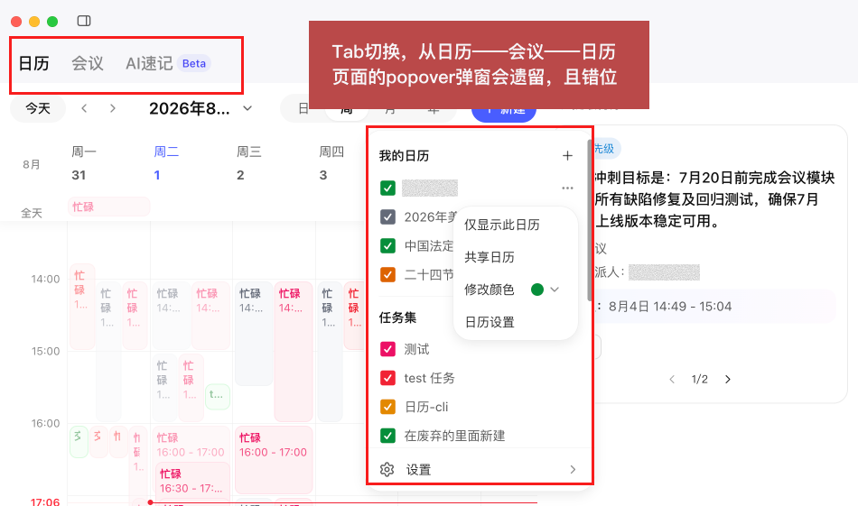

日历弹窗体验问题与修复策略
日历弹窗体验问题与修复策略
走查发现的问题
严重
日历 ↔ 会议切 Tab 后，弹窗遗留不收起
在日历模块打开 Popover / 对话框后，切到「会议」或「AI速记」再切回来，弹窗仍停留在打开状态。基于项目代码定位到的弹窗清单与关闭策略见下方。

核心原则：含用户正在编辑的数据 → 不关闭；无编辑数据 → 可关闭。
34
弹窗总数
23
Tab 切换时关闭
8
不应关闭
3
特殊情况
一、应在 Tab 切换时关闭的弹窗 23 个
1.1 导航 / 工具类 Popover（8 个）
| # | 弹窗名称 | 触发方式 | 状态变量 | 触发器文件 |
|---|---|---|---|---|
| 1 | 迷你日历 Popover | 点击 ViewHeader 日期标题按钮 | isMiniCalendarPopoverOpen | ViewHeaderView.tsx |
| 2 | "我的日历" Popover | 点击齿轮图标按钮 | isSettingPopoverOpen | ViewHeaderView.tsx |
| 3 | 更多日程 Popover (+N) | 点击"更多 N 项"按钮 | hostedMoreEventsPopover | WeekComponentView.tsx |
| 4 | 重复编辑范围 Popover | 点击循环日程编辑图标 | showRepeatEditPopover | EventPanelView.tsx |
| 5 | 更多操作 Popover | 点击"…"三点按钮 | showMoreActionsPopover | EventPanelView.tsx |
| 6 | 拒绝理由 Popover | 点击"拒绝"按钮 | showRefuseReasonSheet | EventPanelView.tsx |
| 7 | 日历选择器 Popover | 点击日历归属下拉 | 组件内部 state | EventTimeSection/ |
| 8 | 忙闲视图日期 Popover | 点击日期单元格 | FreeBusy 相关 state | EventFreeBusyDayView.tsx |
1.2 侧边栏菜单类（2 个）
| # | 弹窗名称 | 触发方式 | 状态变量 | 触发器文件 |
|---|---|---|---|---|
| 9 | 日历广场管理菜单 | 点击日历卡片"管理"或"…" | deleteConfirmOpen 等 | calendarSquare/ |
| 10 | CalendarSidebar 更多菜单 | 悬浮日历项出现"…"按钮 | 每项本地 open state | DesktopCalendarSidebarView.tsx |
1.3 确认对话框类（10 个）
| # | 弹窗名称 | 触发方式 | 状态变量 | 触发器文件 |
|---|---|---|---|---|
| 11 | 删除确认对话框 | 点击删除图标按钮 | showDeleteAlert | EventPanelView.tsx |
| 12 | 放弃编辑确认 | 编辑模式点击关闭/切换 | showUnsavedAlert | EventPanelView.tsx |
| 13 | 发起群聊确认 | 点击"发起群聊"按钮 | showGroupChatConfirm | EventPanelView.tsx |
| 14 | 任务完成确认 | 点击"完成任务"按钮 | showProjectTaskCompleteAlert | EventPanelView.tsx |
| 15 | 任务废弃确认 | 点击"废弃任务"按钮 | showProjectTaskDiscardAlert | EventPanelView.tsx |
| 16 | 切换日历确认 | 更改日程所属日历 | showCalendarChangeConfirm | useEventEditViewModel.ts |
| 17 | 过去时间确认 | 结束时间设为过去后保存 | showPastTimeConfirm | useEventEditViewModel.ts |
| 18 | 申请代建确认 | 侧边栏菜单"申请代建" | useOpenApplyCreateApprovalDialog | DesktopCalendarSidebarView.tsx |
| 19 | 取消关注确认 | 侧边栏菜单"取消关注" | 侧边栏本地 state | DesktopCalendarSidebarView.tsx |
| 20 | 催办确认 | 与会人列表点击"催办" | 对话框本地 state | ParticipantsDialogView.tsx |
1.4 信息展示对话框类（3 个）
| # | 弹窗名称 | 触发方式 | 状态变量 | 触发器文件 |
|---|---|---|---|---|
| 21 | 与会人列表对话框 | 点击参会人数量/头像 | 对话框 open prop | eventDetail/index.tsx |
| 22 | 组织人列表对话框 | 点击组织者名称 | 对话框 open prop | eventDetail/index.tsx |
| 23 | 签到码对话框 | 点击签到码入口 | 对话框 open prop | eventDetail/index.tsx |
二、不应在 Tab 切换时关闭的弹窗 8 个
这些弹窗包含用户正在编辑的表单数据，关闭会导致数据丢失。
| # | 弹窗名称 | 不关闭原因 | 文件位置 |
|---|---|---|---|
| 1 | 日程编辑对话框EventEdit | 用户可能已填写标题、时间、参会人、地点、描述等 | EventEdit.tsx → EventEditView.tsx |
| 2 | EventPanel 编辑模式 | 编辑模式含完整表单（标题、时间、参会人、提醒等） | eventPanel/index.tsx → EventPanelView.tsx |
| 3 | 腾讯会议设置子对话框 | 用户正在配置会议密码、等候室、安全选项等 | useEventEditViewModel.ts |
| 4 | 发布日历对话框 | 用户正在编辑日历名称、描述、封面、订阅范围等 | PublishCalendarDialogView.tsx |
| 5 | 日历设置对话框 | 用户正在修改日历颜色、名称、共享权限、默认提醒等 | CalendarSettingsDialogView.tsx |
| 6 | 申请代建审批对话框 | 用户正在填写审批表单（审批人、理由等） | useOpenApplyCreateApprovalDialog.tsx |
| 7 | AI 速记弹窗 | 可能正在进行录音，独立窗口不受 Tab 切换影响 | useOpenAiNotesDialog.ts |
| 8 | 外部 Qing 弹窗 | 由宿主容器管理生命周期，calendar 项目无法控制其关闭 | useOpenQingDialog.ts |
三、特殊情况 3 个
| # | 弹窗名称 | 当前行为 | 建议 |
|---|---|---|---|
| 1 | EventPanel 查看模式 | 切 Tab 后关闭 | ✅ 可以关闭 — 仅展示详情，无编辑数据 |
| 2 | EventPanel 编辑模式 | 切 Tab 后保留 | ❌ 不能关闭 — 含表单数据 |
| 3 | 安全验证二维码对话框 | 切 Tab 后保留 | ❌ 不建议关闭 — 正在进行安全校验流程 |
四、Tab 切换感知机制
calendar 项目通过以下方式感知外层 Tab 切换：
// 监听页面重新出现（从其他 Tab 切回日历）
subscribeQingEvent("appear", () => {
// 刷新数据、关闭轻量弹窗
});
// 监听页面离开（切到其他 Tab）
subscribeQingEvent("disappear", () => {
// 停止轮询等
});关键文件：hooks/useCalendarRuntimeController.ts、hooks/useRightPanel.ts
兜底方案：document.visibilitychange 事件
已实现的关闭逻辑：useViewHeaderViewModel.tsx 中订阅 appear 事件，自动关闭"迷你日历 Popover"和"我的日历 Popover"。
五、状态管理架构
| 管理层级 | 管理的弹窗 | 文件 |
|---|---|---|
CalendarRoot | EventPanel 全局状态、MoreEventsPopover | core/CalendarRoot.tsx |
useViewHeaderViewModel | 迷你日历、我的日历 Popover | viewHeader/hooks/useViewHeaderViewModel.tsx |
useEventPanelViewModel | EventPanel 所有子弹窗（13+ 个状态变量） | eventPanel/hooks/useEventPanelViewModel.ts |
useEventEditViewModel | EventEdit 所有子弹窗（5+ 个状态变量） | eventDialog/hooks/useEventEditViewModel.ts |
useCalendarSquareViewModel | 日历广场相关弹窗 | calendarSquare/hooks/useCalendarSquareViewModel.ts |
| 组件本地 state | Sidebar 菜单、广场卡片菜单等 | 各组件文件内 |
useOpenQingDialog | 外部宿主弹窗（AI 速记、会议室等） | hooks/useOpenQingDialog.ts |